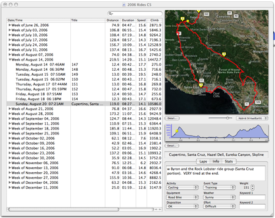

Using the Main Browser
The Main Browser is where you begin working with Ascent. Initially the browser will be empty -- data must be loaded by syncing to your GPS. After a successful sync operation, the browser will be populated with activities, and organized chronologically by weeks.
Select an activity by clicking it in the left browser pane. Ascent will immediately attempt to download a map of the area in which the activity took place. (Note that an active internet connection is necessary for map downloading, unless the map has already been cached from a previous run of Ascent.) If a map is available, it will appear in the map pane in the upper right corner of the browser window. An altitude profile appears under that, and various lap and summary information for the activity appears in the bottom right-hand corner of the window.
Note that although most people initially work with just a single browser window, you can create and have multiple browser windows open at the same time. Each window stores its activities in a separate data file. It's up to you how you want to organize activities within data files. For example, you could create a new data file for each year, each activity (cycling, running, hiking), or each activity type (races, training, etc.). Activities can be cut, copied, and pasted between browser windows (and therefore data files) as desired. Therefore it doesn't really matter which browser window is active when you sync to your GPS, because you can always cut and paste activities into any other browser window.

See also
Syncing to a GPS
Entering activity notes and other info
Searching in the browser
Main Browser Topics